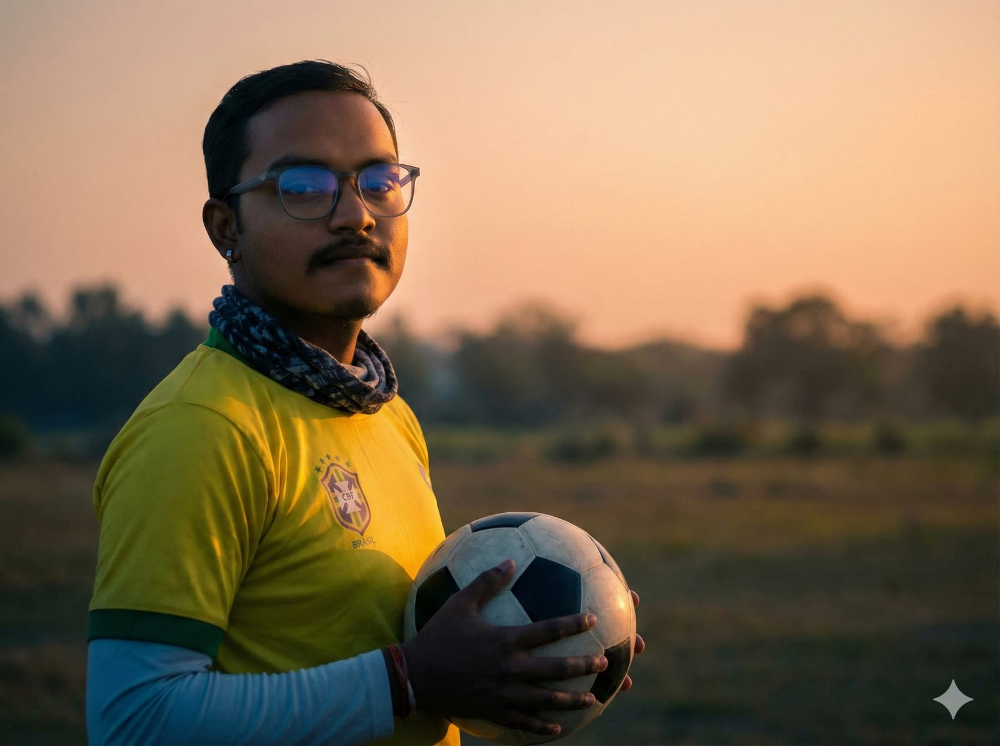

OPEN TO INTERNSHIPS & COLLABORATIONS · 2026

IDENTITY
DJ
Engineer.
B.Tech — Electronics & Communication Engineering
UNIVERSITY OF ENGINERING AND MANAGEMENT · BATCH 2024–2028
Electronics & Communication Engineering student USING AI for systems builder bridging the gap between raw circuits and intelligence. Hardware builder and AI-assisted developer. My strength lies in system design and problem-solving. I architect the physical circuits and partner with advanced AI tools to handle the heavy software logic, turning ambitious ideas into fully functioning prototypes. I try to learn and build things that work in the real world.
LANGUAGES · English · Bengali · Hindi
Hardware Integration
Rapid Prototyping
AI-Assisted Development
Raspberry Pi
Python
ARDUINO
CGPA 1
9.2
CGPA 2
8.6
CGPA 3
8.3
ENROLLMENT
—
REGISTRATION
—
STATUS
ACTIVE
MODULE_PROJECTS
CLASSIFIED ARCHIVE
DECRYPT
ARCHIVE
ARCHIVE
MODULE_MEDIA
HOLO-ARCHIVE
MODULE_TIMELINE
RESEARCH NOTES
MODULE_LINKS
LINK DIRECTORY
MODULE_CONTACT
ESTABLISH CONTACT
MODULE_CERTIFICATIONS
CREDENTIALS & CERTIFICATES
Cyber Security Fundamentals
University of London · Oct 2025
Generative Artificial Intelligence (GenAI)
0x.Day & UEM · Jul 2024
Roadmap to Data Structure & Algorithms
GeeksforGeeks UEM · Jul 2024
Intro to Information Technology & AWS Cloud
Amazon Web Services · Jun 2025
Accelerate Your Learning with ChatGPT
Deep Teaching Solutions · Jun 2025
Introduction to Programming with MATLAB
Vanderbilt University · Oct 2025
Semiconductor Packaging Manufacturing
Arizona State University · Jun 2025
MODULE_ACADEMIC
SEMESTER TOPOGRAPHY
MODULE_GITHUB
CONTRIBUTION TOPOGRAPHY
MODULE_NETWORK
NEURAL KNOWLEDGE CORE
MODULE_ACTIVE
CURRENTLY LEARNING
🧠 AIML
MODULE_PERSONAL
BEYOND THE CIRCUITS
⚽ Football tactics obsessive — inspired FC Manager AI
🌏 Timezone: IST (UTC +5:30) — Kolkata, India
🌙 Reads story books
🤝 Wanna make IRON MAN someday
// MODULE_SKILLS